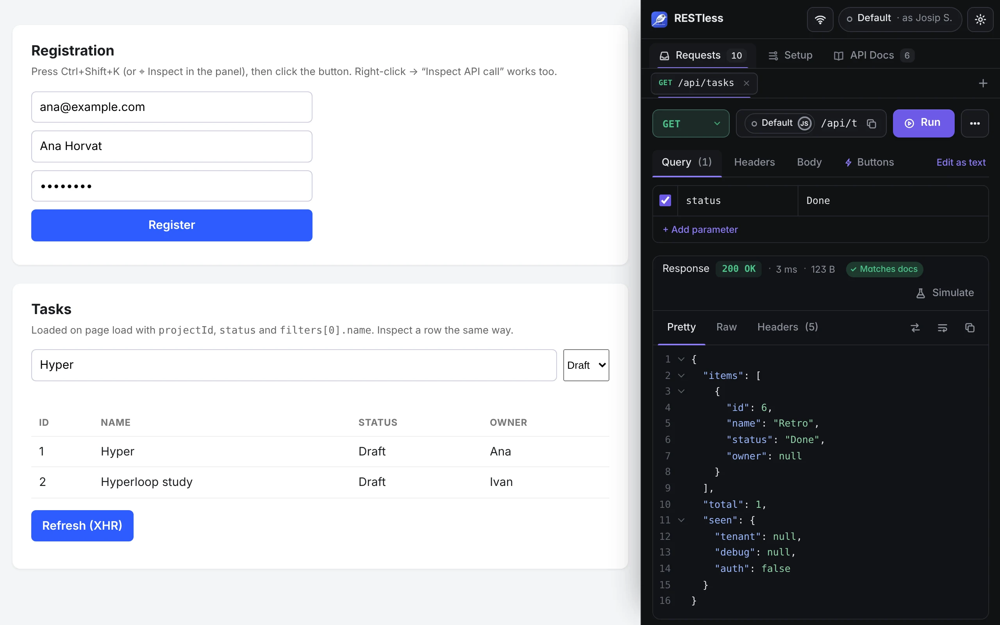
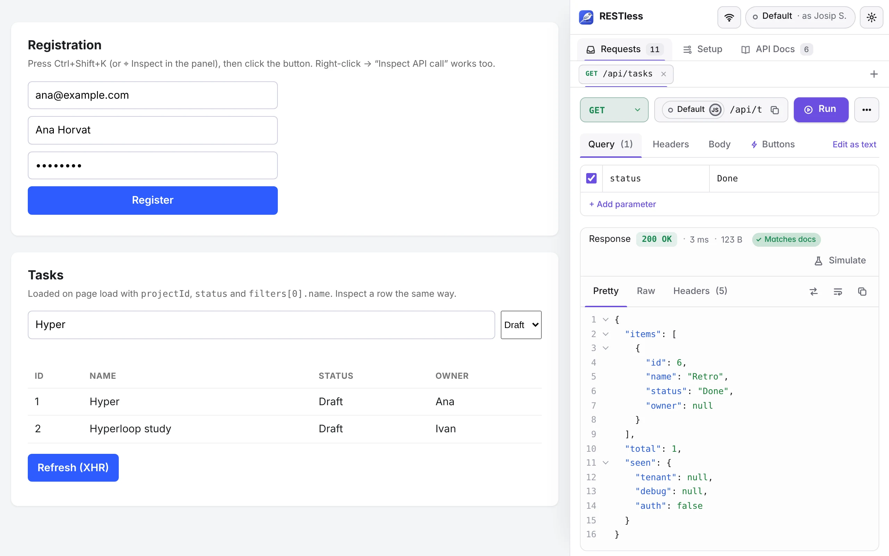
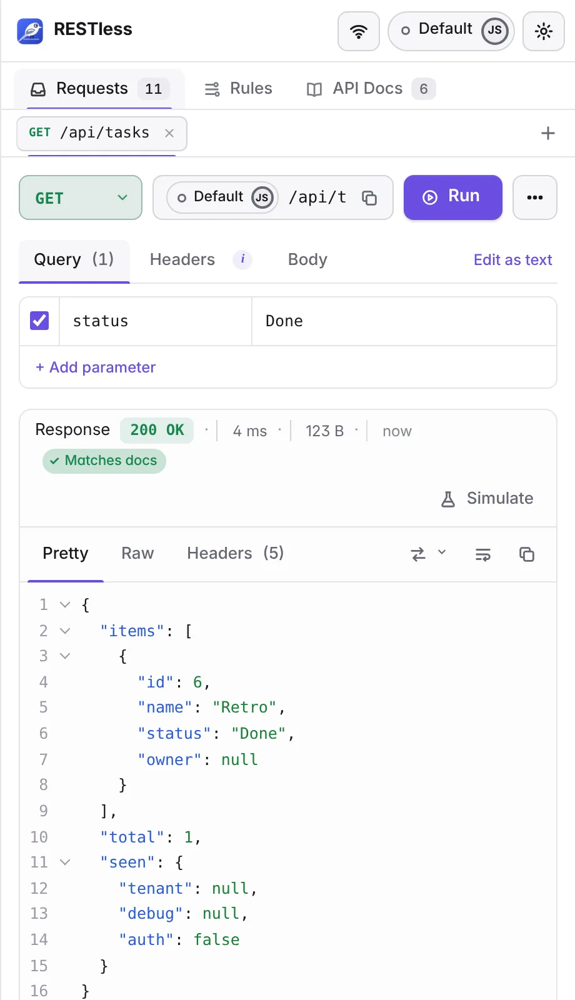
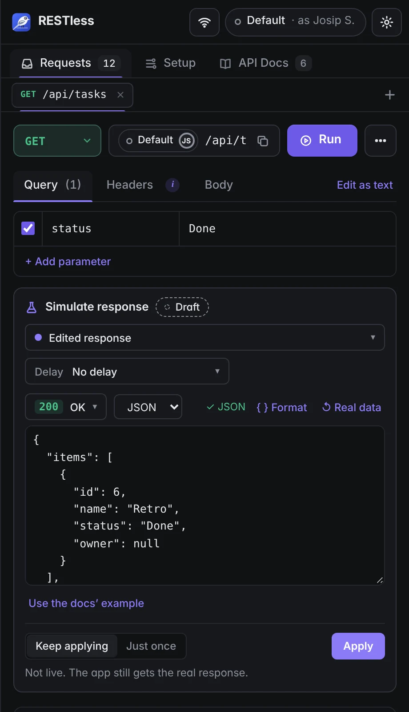
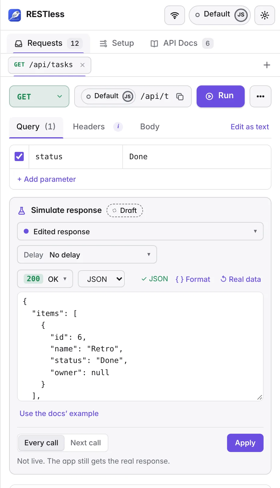
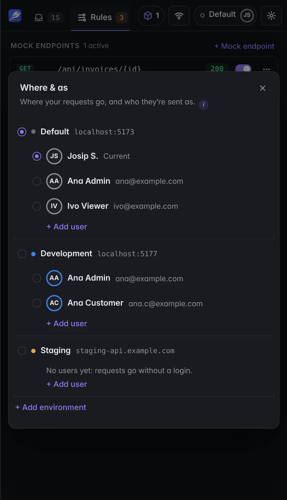
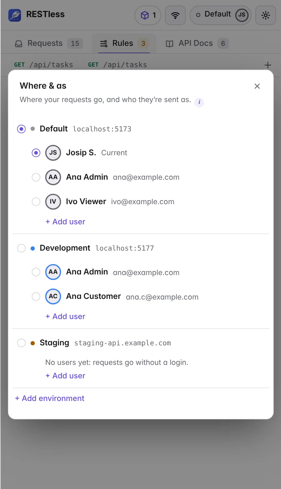
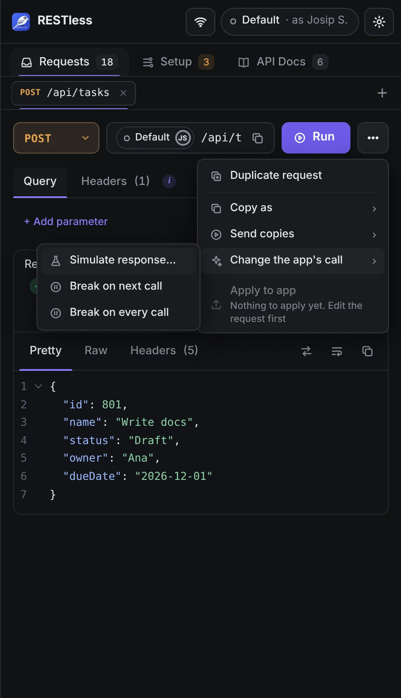
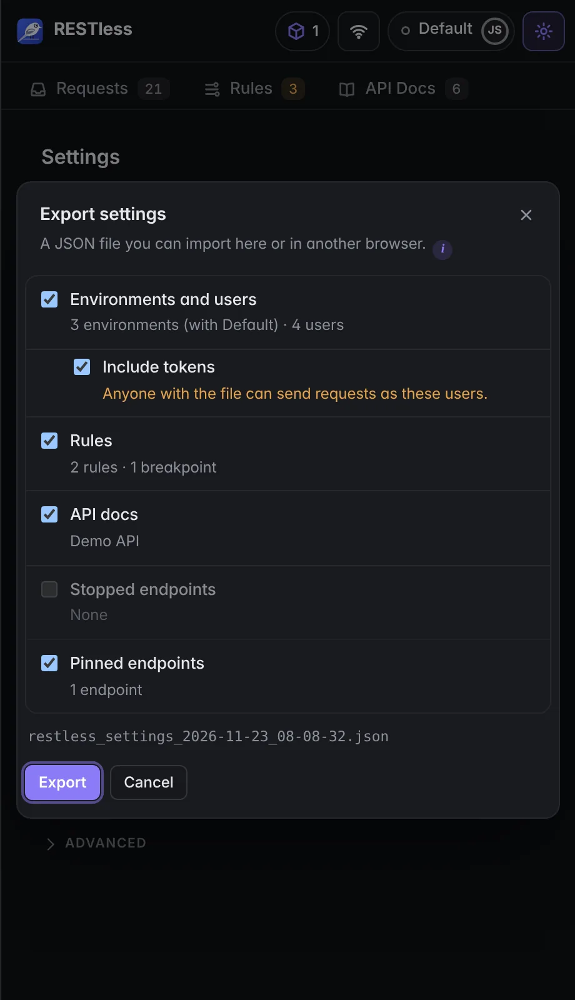

RESTless
The Network tab on steroids. Never let your API rest.
A Chrome extension that shows every API call your app makes, and lets you change, replay and fake them.


What it does


Inspect & replayEdit any call and run it again.

SimulateGive the app a different answer.
 Mock endpointsAnswer endpoints that don’t exist yet.
Mock endpointsAnswer endpoints that don’t exist yet.
 API docsBrowse and try your OpenAPI docs.
API docsBrowse and try your OpenAPI docs.

Environments & usersSend requests anywhere, as anyone.
 Testing toolsOffline, permissions, edge cases.
Testing toolsOffline, permissions, edge cases.
 RequestsSearch, filter and pin calls.
RequestsSearch, filter and pin calls.
 Import & exportShare your setup as one file.
Import & exportShare your setup as one file.Install in a minute
- Clone the repo or download it as a ZIP from GitHub.
- Open
chrome://extensionsand turn on Developer mode. - Click Load unpacked and pick the
restlessfolder.
Then press Ctrl+Y on your app. Getting started →
Try it first
The live demo runs RESTless inside a small sample app, right in your browser.